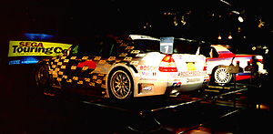

セガ ツーリングカーチャンピオンシップ
スペシャルステージin京都ジョイポリス

| メルセデス・ベンツ日本（株）およびフィアットオートジャパン（株）からの実車提供により実現した、迫力のライドアトラクション。 ６軸モーションベースによる挙動はすさまじく、アーケードの猛者もタイムを出すのに一苦労だ。 京都に旅行の際は是非ジョイポリスを行程に組み込んでほしい。 |
| 定員 | ２名 |
| プレイ時間 | ３～８分 |
| 対象 | 身長１３０ｃｍ以上 |
| 料金 | １人６００円／２人８００円 |
ただいまのトップタイム（自己申告）
Ｄ．Ｔａｋａｈａｔａ ２’４６”９４６
AMG MERCEDES / MT
このタイムより速い人はソフト５研（旧ＡＭ１２研）までメールで！

|

|